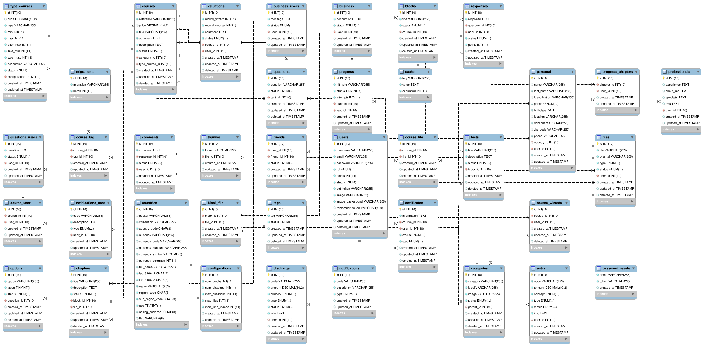

Plataforma Interactiva Integral para Programadores
developerFriends
proyectistas Isaac Seijas & Eduardo Del Nogal
Proyecto de Grado I
Área de Ingeniería en SistemasResumen & Introducción
Contenido:
Materiales y Métodos
Materiales


Métodos
los proyectistas se basaron en la metodología RAD cuyas siglas en inglés significan
Rapid Application Development
Fases de la Metodología RAD
a) Modelado de gestión
El flujo de información entre las funciones de gestión se modela de forma que responda a las siguientes preguntas: ¿Qué información conduce el proceso de gestión? ¿Qué información se genera? ¿Quién la genera? ¿A dónde va la información? ¿Quién la proceso?
b) Modelado de datos
El flujo de información definido como parte de la fase de modelado de gestión se refina como un conjunto de objetos de datos necesarios para apoyar la empresa. Se definen las características (llamadas atributos) de cada uno de los objetos y las relaciones entre estos objetos.
c) Modelado de proceso
Los objetos de datos definidos en la fase de modelado de datos quedan transformados para lograr el flujo de información necesario para implementar una función de gestión. Las descripciones del proceso se crean para añadir, modificar, suprimir, o recuperar un objeto de datos. Es la comunicación entre los objetos.
d) Generación de aplicaciones
El Desarrollo Rápido de Aplicaciones asume la utilización de técnicas de cuarta generación. En lugar de crear software con lenguajes de programación de tercera generación, el proceso de desarrollo rápido trabaja para volver a utilizar componentes de programas ya existentes (cuando es posible) o a crear componentes reutilizables (cuando sea necesario).
e) Pruebas de entrega
Como el proceso desarrollo rápido enfatiza la reutilización, ya se han comprobado muchos de los componentes de los programas. Esto reduce tiempo de pruebas. Sin embargo, se deben probar todos los componentes nuevos y se deben ejercitar todas las interfaces a fondo.
ApiRest
Con un desarrollo basado en ApiRest para el Back-end, que es una modalidad de manipulación de datos y permite la separación entre la típica estructura cliente-servidor, lo cual permite la portabilidad de los datos y la fácil escalabilidad de las plataformas desarrolladas bajo esta modalidad.
Modelado del Sistema
- Landing "Pagina de aterrizaje mostrar información resumida de la plataforma"
-
Secciones "Para mostrar contenido mas específico de la plataforma"
- Cursos
- Preguntas
- Desarrolladores
- Admin Dashboard "para la administración y gestion de la plataforma"
Estructura de la Base de Datos

Muchas Gracias
\=D/
¡Hasta la próxima!
proyectistas Isaac Seijas & Eduardo Del Nogal